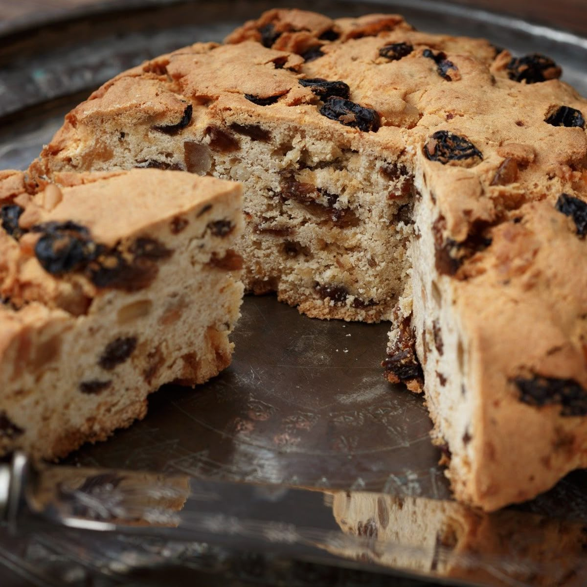
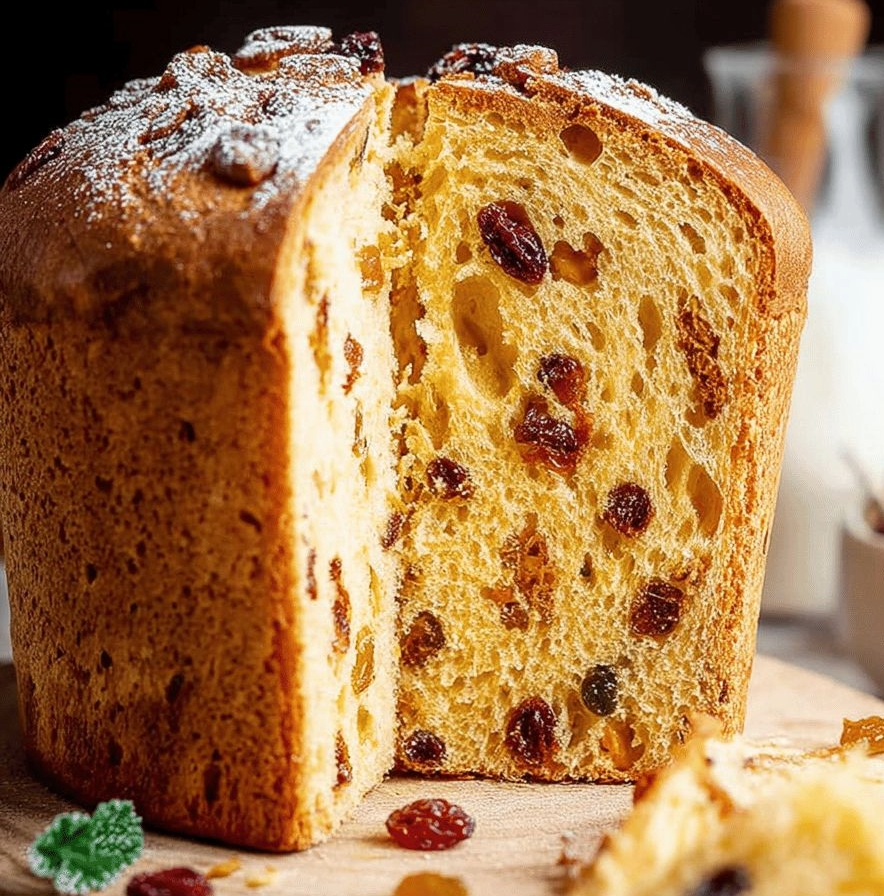

Ricette Dolci
In questa sezione troverai tutte le ricette dolci tipiche delle regioni italiane, adatte ad ogni occasione.

Liguria -Il Pandolce-
Ingredienti:
-Burro a temperatura ambiente 85 g
-Zucchero 100 g
-Uova (1 medio) 55 g
-Farina 00 300 g
-Sale fino 1 g
-Uvetta 230 g
-Arancia candita 80 g
-Cedro candito 80 g
-Pinoli 20 g
-Latte intero 80 g
-Lievito in polvere per dolci 10 g
Preparazione:
Per preparare il pandolce genovese iniziate tagliando a cubetti arancia e cedro canditi. Passate ora al burro a temperatura ambiente che taglierete a pezzi.
Prendete poi una planetaria munita di foglia in cui aggiungere il burro e lo zucchero, la farina setacciata e il lievito in polvere.
Unite il sale e l’uovo e cominciate ad impastare a velocità media. Mentre impastate unite il latte a temperatura ambiente a filo. Quando si sarà assorbito, arrestate la planetaria per un momento e unite l’arancia, il cedro e l’uvetta, precedentemente sciacquata sotto acqua corrente e asciugata.
Infine versate i pinoli. Azionate nuovamente la planetaria per circa 10 secondi a velocità media per amalgamare bene gli ingredienti. Trasferite quindi l’impasto su una spianatoia e compattate l’impasto con le mani.
Dategli una forma tondeggiante. A questo punto schiacciate leggermente con le mani la parte superiore del panetto in modo tale da appiattirla leggermente. Fate scivolare le mani lungo i bordi dell’impasto così da regolarli e dare una forma a disco ben definita al pandolce: otterrete un disco alto circa 3 cm e di diametro di 10 cm. Quindi disponetelo su una leccarda foderata con carta forno.
Aiutandovi con un tarocco, oppure con una lama affilata, effettuate una decorazione a rombi sulla superficie, incidendo delle linee diagonali. Potete ora infornare il vostro pandolce in forno statico preriscaldato a 180°C per 45-50 minuti (oppure in forno ventilato preriscaldato a 160°C per 35-40 minuti circa). Trascorso il tempo di cottura estraete dal forno e lasciate riposare alcuni minuti prima portare in tavola questa delizia natalizia!

Lombardia -Il Panettone-
Ingredienti:
-Farina Manitoba 250 g
-Lievito madre (rinfrescato tre volte nell'arco della giornata) 65 g
-Acqua (temperatura ambiente) 125 g
-Burro morbido 70 g
-Zucchero 65 g
-Malto 2 g
-Tuorli 50 g
Per il secondo impasto:
-Farina Manitoba 62 g
-Zucchero 50 g
-Burro morbido 40g
-Tuorli 50 g
-Uvetta sultanina 150 g
-Sale fino 2 g
-Baccello di vaniglia 1
-Miele di acacia 16 g
-Cedro candito 30 g
-Arancia candita 70 g
-Pasta di arance 75 g
-Pasta di mandarini 30 g
-Pasta di limoni 20 g
Per imburrare la superficie:
-Burro 20 g
Per la pasta di mandarini (facoltativa):
-Mandarini (o arance o limoni) 250 g
-Zucchero 125 g
Preparazione:
Primo impasto:Per preparare il panettone iniziate a realizzare il primo impasto. Versate in una ciotola il malto, i 65 g di zucchero semolato e i 125 g d'acqua a temperatura ambiente.
Mescolate con una frusta fino a far sciogliere lo zucchero; dopodiché versate lo sciroppo in una planetaria dotata di una frusta a foglia. Aggiungete quindi i 250 g di farina manitoba in una volta sola e iniziate ad impastare.
Basteranno circa 5 minuti e non appena l'impasto avrà preso consistenza aggiungete 65 g di lievito madre rinfrescato 3 volte nell'arco della giornata e continuate ad impastare a velocità moderata. Nel frattempo preparate un'emulsione di burro e tuorli. Trasferite 70 g di burro morbido in una ciotolina e lavoratelo con una frusta a mano fino ad ottenere una consistenza cremosa. Aggiungete circa la metà dei tuorli e mescolate.
Unite poi i restanti e mescolate nuovamente modo da ottenere un'emulsione omogena. A questo punto aggiungetene metà nella planetaria in funzione.
Per favorire l'assorbimento utilizzando una leccarda staccate l'impasto che sarà rimasto attaccato alla foglia e azionate nuovamente la planetaria a velocità media. Quando l'impasto risulterà ben asciutto e il burro sarà stato assorbito completamente unite la parte restante dell'emulsione di burro e tuorli. Lavorate ancora fino ad ottenere un impasto liscio e omogeneo, dopodiché trasferitelo su un piano di lavoro, aiutandovi con un tarocco.
Date una forma sferica all'impasto, trasferitelo all'interno di una ciotola di vetro, coprite con pellicola per alimenti e lasciate lievitare per circa 12 ore ad una temperatura di circa 26° fino a che l'impasto non sarà triplicato di volume. Nel frattempo, se preferite preparare in casa la pasta di mandarini, arance o limoni guardate il box in fondo.
Secondo impasto:Per il secondo impasto del panettone utilizzando un tarocco staccate il primo impasto (lievitato) dalla ciotola di vetro e trasferitelo in planetaria, sempre dotata di foglia. Aggiungete 65 g di farina manitoba e azionate la macchina a velocità moderata fino a quando non sarà completamente assorbita. Unite poi le masse aromatiche, ovvero la pasta di arancia, quella di mandarini e quella di limone; aggiungete poi il miele e i semi della bacca di vaniglia. Azionate nuovamente la planetaria fino a far assorbire completamente gli aromi. Nel frattempo preparate nuovamente l'emulsione con 40 g di burro e 50 g tuorli, unendoli in due volte come fatto in precedenza.
Non appena il vostro impasto risulterà elastico, spegnete la macchina e aggiungete 50 g di zucchero. Azionate nuovamente la macchina per pochi minuti e unite un pizzico di sale. Lasciatelo assorbire e spegnete di nuovo la planetaria. Aggiungete l'emulsione di burro sempre in due volte e ultimate di lavorare l'impasto, fino a che risulterà ben incordato. Nel frattempo mettete a mollo l'uvetta e tagliate a cubetti sia il cedro che l'arancia candita.
A questo punto scolate per bene l'uvetta e versatela in una ciotola, aggiungete anche arancia e cedro e mescolate. Per esser certi che l'impasto è pronto spegnete la macchina, prelevatene una porzione e se allargandola con le mani risulterà sottile ma non si spezzerà facilmente significa che ha raggiunto la giusta elasticità; se così non fosse lavorate l'impasto ancora qualche minuto, altrimenti aggiungete il mix di frutta candita e uvetta in planetaria e azionatela nuovamente a velocità moderata.
Quando il mix di frutta candita e uvetta saranno ben incorporati spegnete la macchina, staccate la foglia e lasciate riposare l'impasto per circa 20 minuti all'interno della ciotola della planetaria, coprendola un canovaccio. Dopodiché trasferitelo su un piano, dategli alcune pieghe e lasciate riposare per altri 30 minuti a temperatura ambiente; non ci sarà bisogno di coprirlo. Non preoccupatevi se l'impasto dovesse risultare un po' appiccicoso aiutatevi a lavorarlo utilizzando un tarocco.
Per formare e cuocere il panettone:Trascorsi i 30 minuti prelevate 1050 gr di impasto, arrotondate delicatamente in modo da dare una forma sferica e trasferite all'interno di uno stampo di carta da 1 kg (le dimensioni esatte sono 22 cm di diametro e 8 cm di altezza). Utilizzate l'impasto rimasto (circa 150 g) per preparare due piccoli panettoncini utilizzando gli stampi da muffin. Scaldate il forno a 35°, poi spegnetelo, coprite il panettone con una cupola di vetro e riponete il panettone e i panettoncini a lievitare in forno per 6-8 ore.
Una volta lievitato lasciatelo scoperto a temperatura ambiente per circa 30 minuti, in questo modo si formerà in superficie una sottile pellicina. Con un taglierino fate un'incisione a croce e mettete una noce di burro al centro della croce. Infornate a 175° in modalità statica per 50 minuti, dopo 20-25 minuti sfornate i panettoncini e proseguite la cottura del panettone per i restanti minuti. Poi sfornatelo e infilzatelo con 2 stecchini d'acciaio sui due bordi esterni. Lasciatelo raffreddare capovolto per tutta la notte, utilizzando due pentole o due ciotole della stessa altezza per fissarlo. Il mattino successivo giratelo, togliete gli stecchini e il vostro panettone sarà pronto da gustare!
Per preparae la pasta di mandarini:Se volete potete realizzare la pasta dei vari agrumi in casa. Per realizzare quella al mandarino come prima cosa lavateli ed eliminate le estremità; quindi senza sbucciarli tagliateli prima a metà e poi a fette che dovrete dividere nuovamente a metà.
Trasferitele in un tegame e unite lo zucchero, mescolate e lasciate maturare per circa 15-20 minuti fino a che lo zucchero si sarà sciolto.
A questo punto ponete sul fuoco e cuocete a fuoco basso per 35-40 minuti. Una volta cotti lasciate intiepidire e frullate il tutto con un mixer ad immersione, fino ad ottenere la vostra pasta di mandarini.